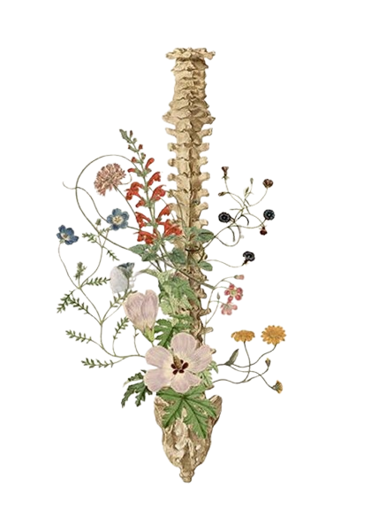
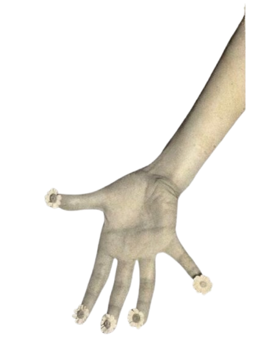
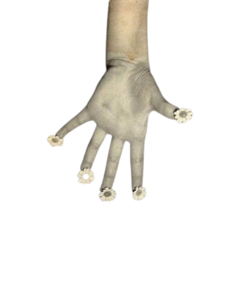
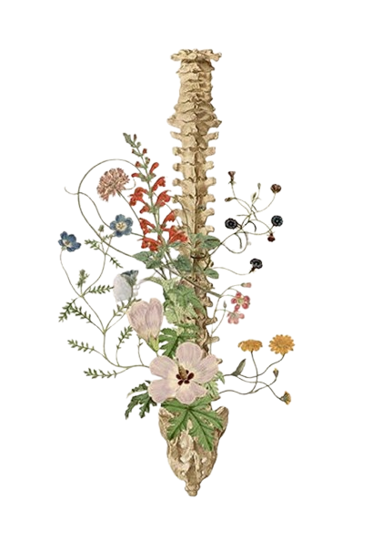
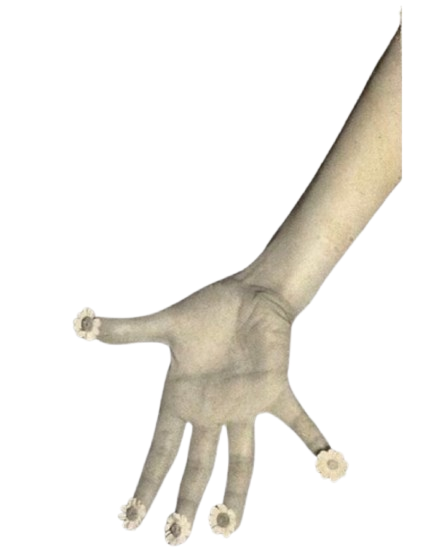
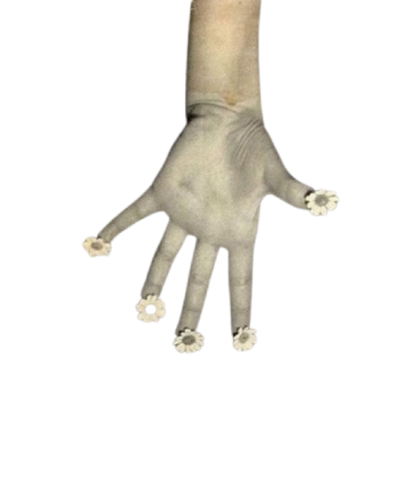

Aqui exploramos o conhecimento, a memória e a perspectiva.
Um espaço para processar emoções e ressignificar o passado.
Ferramentas para construir força e estrutura no dia a dia.
Ferramentas para construir, criar e focar no futuro.
Ferramentas para comunicação, voz e diálogo.
Ferramentas para mudar o jeito de ver as coisas.